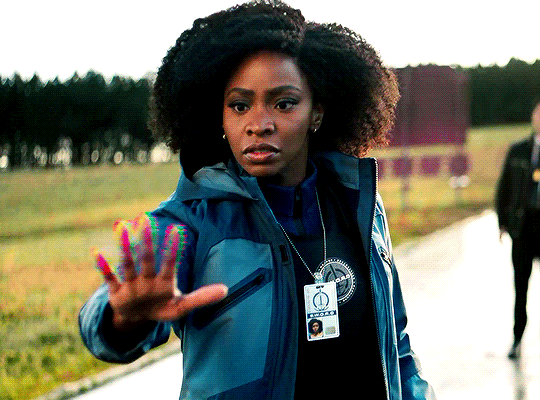

Filosofando sobre a Monica

Monica Rambeau é uma heroína que não tem medo de nada, pois seus super-poderes garantem sua própria segurança,
e porque heróis medrosos não são muito atrativos. Monica domina seus poderes como se nascesse para isso, que,
para Platão, é conhecido como inatismo 一 habilidade de fazer coisas que vem da parte mais profunda de si,
coisas das quais não precisamos ser ensinadas. Nietzsche, por outro viés, refere-se especificamente ao poder como
sendo uma força involuntária, que é responsável por movimentar nosso universo. A narrativa se assemelha à de Rambeau,
que sente um chamado para acolher seus dons.
FONTE: Fanpop, 2021
Monica se destaca e assume a liderança dos Vingadores. Porém, passa a ser menosprezada e desafiada principalmente por um herói chamado Doutor Druida, cuja opinião ou existência nunca foram relevantes para a Terra-616 até esse momento. Monica Rambeau é então cercada por sua própria insegurança, imaginando estar perdendo sua habilidade de julgar o certo e errado, vivenciando o Gaslighting 一 forma de abuso psicológico onde uma figura constantemente distorce a realidade com o objetivo de fazer a vítima questionar sua sanidade e sua habilidade de tomar decisões. Rambeau, cada vez mais incerta de suas ações, comete um erro e perde todos os seus poderes em uma batalha, sendo obrigada a deixar os Vingadores.
Essa parece ser mais uma história cuja a heroína sonhou muito alto e caiu 一 tal qual Ícaro 一 porém, é curioso avaliar como as equidades raciais ou de gênero não se fazem presentes mesmo num mundo onde atirar teias de aranhas pelas mãos é comum. A Marvel e diversas outras companhias falham em valorizar as diferenças raciais e culturais já existentes em nossa sociedade, por acharem mais fácil ignorarem a necessidade de representatividade. No mundo dos heróis, a predominância sempre foi e continua sendo a figura masculina forte, branca e heterossexual, cujas atitudes reforçam a masculinidade tóxica presente em nossa sociedade.
Toda e qualquer forma de produção de conteúdo disponível tem como função não só o entretenimento, mas também a formação de opinião. Essa forma de influência é muito semelhante aos antigos mitos gregos ou sermões da igreja, que mantinham as pessoas no caminho certo e as ensinavam a ética social. O problema surge quando fica claro que essas plataformas não investem na representatividade, e que esta não está disponível para todos de maneira equânime. A representatividade assusta a supremacia, visto que representar mulheres de cor, independentes e influentes, ameaça desestabilizar a hierarquia social na qual homens brancos sempre estiveram e estarão no topo.
Após o acidente, Monica consegue recuperar seus poderes e até desenvolver outros mais, entretanto isso não contribui com a restauração do seu cargo na equipe dos Vingadores. Ao invés disso, nossa ex Capitã Marvel e atual Espectro cria sua própria equipe, os agentes da H.A.T.E. , a qual ela lidera. Monica pode então ser uma boa líder, desde que ela seja irrelevante, desconhecida e que não ameace a supremacia masculina e branca que reina no mundo dos quadrinhos, assim como em todas as outras indústrias.